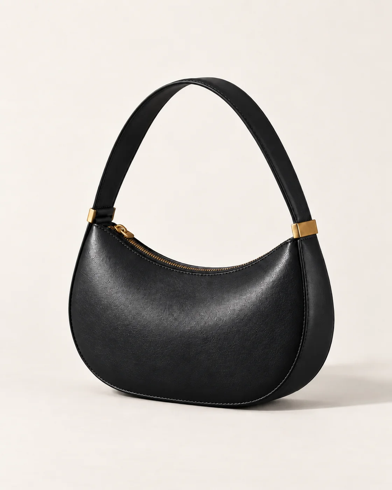

SABLE / Leather accessories / Self-initiated concept
Objects of
intention.
A fashion identity shaped by the object.
A storefront designed around the choice.
Visitor password: chowck

01 / The brief
The silhouette
is the signature.
The fictional shopper wants one compact bag with presence, and enough product detail to choose a finish with confidence. SABLE explores that shopping task through two objects: the Arc shoulder bag and its quieter companion, the Fold cardholder.
The challenge was to make a leather accessories house feel assured without borrowing a fashion logo or inventing a heritage story. The object—not a status claim—provides the identity.
Fictional audience and design hypothesis. No customer research or commercial results are claimed.
02 / The visual language
Tall type.
Deep colour.
One clear curve.
Bodoni Moda’s high contrast and vertical rhythm give the wordmark a fashion register. Compact Manrope labels keep the buying decisions legible. Oxblood carries the brand; black frames the campaign; chalk gives the product room to be compared.
Unequal columns and decisive crops create tension. Product controls use square borders and plain labels, so the expression never obscures the shopping task.
Identity study / 01
Display / upright
Manrope
Labels / body

03 / Art direction
Give the light
something to hold.
The campaign uses hard light and a stone plinth to define the curved outline. Product views soften the light and remove the set, so surface and finish become easier to judge.
The campaign bag became the reference for subsequent generated views. The Ink image changes the colour of that same product; the close-up supports the material story. Fine grain, stitching and hardware still vary slightly—these are concept studies, not production photography.
04 / The shopping experience
From presence
to preference.
The campaign introduces the Arc. A quieter product section makes Oxblood and Ink explicit, offers a full-form view and a labeled material detail, then keeps the add button still and easy to reach.
The Shopify bag keeps Oxblood and Ink as separate catalog variants, updates quantities and totals, and supports removal. Native product forms submit the chosen finish to Shopify. Gallery captions follow the selected finish; the shopping flow also works without JavaScript.
Try the finish & bag flow

05 / Design decisions
Restraint, with a reason.
Object before atmosphere
The campaign frames the curved body and short strap clearly, so the bag itself carries the identity.
Comparison before effects
The campaign uses unequal image and text widths. Product views use matching scale and neutral light so the two finishes remain easy to compare.
Stillness before spectacle
Finish selection updates the product image immediately. Brief colour feedback confirms the control state, while the Add to demo bag button stays in place.
06 / Platform translation
Built to be
edited.
The complete Shopify Liquid theme reads catalog products, variants, media, prices and availability, and uses native Shopify product forms. Homepage heading, hero image and product selections can be edited through the theme editor.
The theme is published to a dedicated Shopify development store. Visitor access, both product pages, all three variants, and native bag add, quantity update and removal have been checked. Commercial inventory, payment configuration, physical devices and assistive technology remain separate work.
Concept scope
and next steps.
SABLE is a self-initiated leather-accessories concept in the Oviks Media portfolio. Identity, campaign studies and a responsive Shopify storefront share a consistent silhouette and finish palette. Prices, dimensions and materials are illustrative.
The development store demonstrates product comparison and native bag interactions. A commercial release would require physical samples, verified specifications, inventory and fulfillment.
Explore the Shopify demo ↗